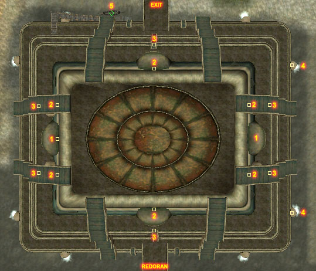

Morrowind:Vivec Foreign
Morrowind:Places:Vivec
 Entrance to the Foreign Quarter |
|
The Shrine Ibishammus |
|
The Plaza |
|
 Map of Vivec's Foreign Quarter |
The Foreign Quarter is the northernmost canton of the city of Vivec. It is so named because it was originally the only canton in which foreign visitors to Vivec were allowed. To this day, outlanders receive friendlier treatment here than anywhere else in Vivec. You will find a sprawl of merchants hailing from all reaches of the Empire with a plethora of goods. Even more exotic tastes are catered to in the Daedric shrine Ibishammus in its underworks.
The Plaza
Although foreign visitors may now travel freely throughout the city, the Foreign Quarter retains its Imperial services, including the Mages, Fighters Guild, and an Imperial Cult shrine on the Plaza level.
The Waistworks
Unlike the other cantons in Vivec, the Foreign Quarter boasts an extra level, the Upper Waistworks, in which minor services are located. The tavern Black Shalk Cornerclub is located in the eastern Lower Waistworks and caters to foreign visitors with rooms available for rent. Huleeya can be found here initially. Jobasha's Rare Books is located in the western Lower Waistworks. Jobasha, the owner, is a friend of Huleeya. He has quite a variety of books, though not as many as are available in the library in the Temple Canton. Jobasha has a plant named Charles, from which you can extract the alchemical ingredient Meteor Slime.
The Canalworks
You get to the Canalworks by entering the Lower Waistworks and then going down the internal set of stairs. The western Canalworks room has a clothier, Agrippina Herennia, Jeanne, a general trader, and an Imperial Cult altar, where the healer Letreius Muco offers training and has potions for sale. On the east side, J'Rasha is a healer with spells (among them is Wild Open), potions and ingredients. Hiding in the back room of Simine Fralinie's bookshop is Crazy-Legs Arantamo, who offers trade and training only to Thieves Guild members, and Gentleman Jim Stacey, the master of the Thieves Guild. The Foreign Quarter Tomb connects the two sides of the Canalworks, and has leveled undead guarding random loot.
The Underworks
The Underworks has a dead body in the water by the east side with a high quality helmet, and the Daedric shrine Ibishammus.
Notable Figures
Arch-Mage Trebonius in the Guild of Mages, Lorbumol gro-Aglakh and Sjoring Hard-Heart in the Guild of Fighters on the Plaza level
Getting there & around
To the north, a bridge provides access to the plantations in the Ascadian Isles and the docks with the Frost-Ghost, which can take you to Hla Oad, Ebonheart, Molag Mar and Tel Branora. The Silt Strider provides service to Seyda Neen, Suran, Molag Mar and Balmora. West of the bridge, the Gondola ferries you to Arena, Hlaalu and Telvanni Canton. A bridge at the south-end connects to the Redoran Canton. The Guild Guide on the Plaza provides transport to other Guild of Mages in Vvardenfell.
Maps
Plaza
Services in the Plaza |
Upper Waistworks
Services in the Upper Waistworks |
Lower Waistworks
Services in the Lower Waistworks |
Canalworks
Services in the Canalworks |